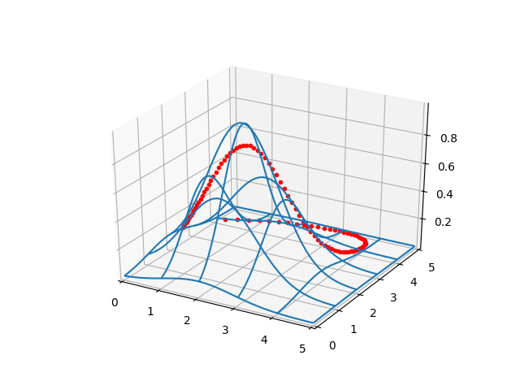
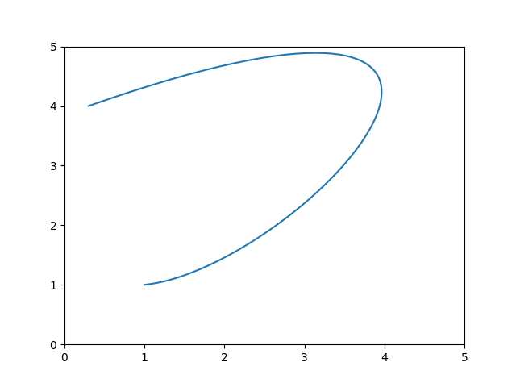

from mpl_toolkits.mplot3d import Axes3D
from scipy.spatial.distance import cdist
from matplotlib import cm
def gfunc(x, y):
s1 = 2.2; x1 = 2.0; y1 = 2.0
g1 = np.exp( -4 *np.log(2) * ((x-x1)**2+(y-y1)**2) / s1**2)
return g1
D = 50
x = np.linspace(0,5,D)
y = np.linspace(0,5,D)
xx,yy = np.meshgrid(x,y)
zz = gfunc(xx,yy)
fig = plt.figure()
ax = fig.gca(projection='3d')
ax.set_xlim(0,5)
ax.set_ylim(0,5)
surf = ax.plot_wireframe(xx, yy, zz,rstride=10, cstride=10)
t = np.linspace(0,1.0,100)
a1,a2,a3 = 1.5, 8.1, 4.0
b1,b2,b3 = 0.3, 0.4, 23.3
a0,b0=(1.0,1.0)
ex,ey=(0.3,4.0)
a4 = ex - a0 - (a1+a2+a3)
b4 = ey - b0 - (b1+b2+b3)
x = a0 + a1*t + a2*t**2 + a3*t**3 + a4*t**4
y = b0 + b1*t + b2*t**2 + b3*t**3 + b4*t**4
ax.plot3D(x, y, gfunc(x,y),'r.')
plt.savefig('calc_multi_40_elev_01.png')

plt.xlim(0,5.0)
plt.ylim(0,5.0)
plt.plot(x,y)
plt.savefig('calc_multi_40_elev_02.png')

$$ \int_{t=0}^{t=1} f(x(t),y(t)) \sqrt{(\mathrm{d} x/\mathrm{d} t)^2 + (\mathrm{d} y/\mathrm{d} t)^2} \mathrm{d} t $$
import sympy
vars = 't a0 a1 a2 a3 b0 b1 b2 b3 gamma x y'
t, a0, a1, a2, a3, b0, b1, b2, b3, gamma, x, y = sympy.symbols(vars)
xdef = a0 + a1*t + a2*t**2 + a3*t**3 + a4*t**4
ydef = b0 + b1*t + b2*t**2 + b3*t**3 + b4*t**4
dxdt = sympy.diff(xdef,t)
print (dxdt)
dydt = sympy.diff(ydef,t)
print (dydt)
sqrtdef = sympy.sqrt(sympy.diff(xdef,t)**2 + sympy.diff(ydef,t))
print (sqrtdef)
a1 + 2*a2*t + 3*a3*t**2 - 57.2*t**3
b1 + 2*b2*t + 3*b3*t**2 - 84.0*t**3
sqrt(b1 + 2*b2*t + 3*b3*t**2 - 84.0*t**3 + (a1 + 2*a2*t + 3*a3*t**2 - 57.2*t**3)**2)
def trapz(y, dx):
tmp = np.sum(y[1:-1]*2.0)
return (y[0]+tmp+y[-1])*(dx/2.0)
def intval(t,a0,a1,a2,a3,a4,b0,b1,b2,b3,b4):
sq = np.sqrt(b1 + 2*b2*t + 3*b3*t**2 - 112.0*t**3 + (a1 + 2*a2*t + 3*a3*t**2 - 65.2*t**3)**2)
x = a0 + a1*t + a2*t**2 + a3*t**3 + a4*t**4
y = b0 + b1*t + b2*t**2 + b3*t**3 + b4*t**4
x = np.array(x)
y = np.array(y)
z = gfunc(x,y)
res = z * sq
T = trapz(res, 1.0/len(t))
return T
t = np.linspace(0,1,100)
a0,a1,a2,a3 = 1.0, 1.5, 10.1, 4.0
b0,b1,b2,b3 = 1.0, 0.3, 0.4, 30.3
sx,sy=(a0,b0)
ex,ey=(0.3,4.0)
a4 = ex - sx - (a1+a2+a3)
b4 = ey - sy - (b1+b2+b3)
T = intval(t,a0,a1,a2,a3,a4,b0,b1,b2,b3,b4)
print (T)
1.6938206080869116
[devam edecek]